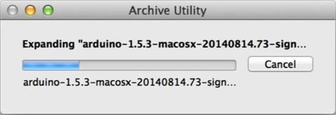
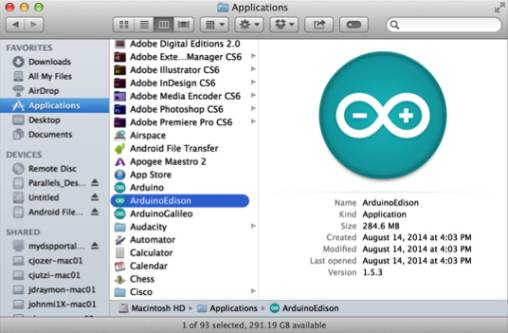

-
Get the latest Arduino IDE.
- On the USB key: downloads → Mac
- Copy arduino-[version]-macosx.zip to your computer.
-
Double-click arduino-[version]-macosx.zip to extract the archive.

-
Rename Arduino to be ArduinoEdison.
-
Move ArduinoEdison into your Mac Applications folder.

-
Double-click on ArduinoEdison to open the Arduino IDE.
-
Choose Tools > Board > Boards Manager to open the Boards Manager.

-
In the list of boards, select Intel i686 Boards which includes the Intel® Edison board.
-
Click Install.
-
When the installation process is finished, click OK.